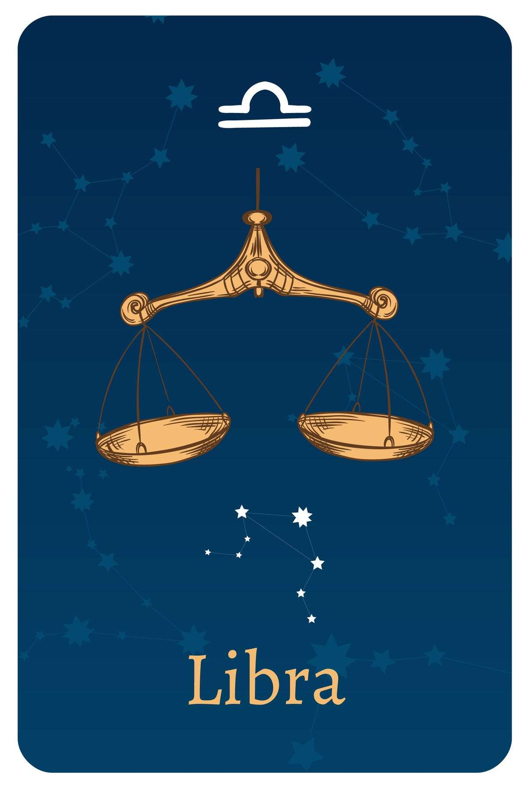

- Date Range : SEP 23 - OCT 22
- Element : Air
- Color : Pink
- Quality : Cardial
- Day : Friday
- Ruling planet : Venus
- Ruling house : Seventh
- Lucky number : 4, 6, 13, 15, 24
- Lucky gem : Opal
- Top love Matches : Gemini
LIBRA (SEP 23 - OCT 22)
Libra Personality Traits
Strengths : Cooperative,diplomatic, gracious, fair-minded, social
Weaknesses : Indecisive, avoids confrontations, will carry a grudge, self-pity
Libra likes : Harmony, gentleness, sharing with others, the outdoors
Libra dislike : Violence, injustice, loudmouths, conformity
Individuals born under the sign of Libra are known for their peaceful and fair nature, and they generally dislike being alone. Partnership is crucial for them, and they seek someone who can reflect their inner selves. Librans are fascinated by balance and symmetry, and they are constantly striving for justice and equality, realizing that the most important thing in life is their own inner personality. They are willing to go to great lengths to avoid conflict and maintain peace whenever possible.
Libra is an Air sign situated between Gemini and Aquarius, providing these individuals with constant mental stimulation, a strong intellect, and a sharp mind. They are inspired by good books, engaging discussions, and individuals who have a lot to say. However, Each Libran needs to be cautious when speaking to others for when they are forced to make decisions or pick sides they may realize that they are in the wrong place, surrounded by the wrong people. No partner should make them forget that they have their own opinions. The ruling planet of Libra is Venus, which makes these people great lovers and admirers of expensive, material possessions. They need to enrich their lives with music, art, and beautiful places that they have the opportunity to visit.
Libra Love Style
Libra adores flirting, loves the drama and pageantry of romance, and is one of the few signs of the Zodiac that actually enjoys first dates. While Libras excel at charming potential partners, they have difficulty figuring out what they want, and all too often can get lost in the twists and turns of a relationship. Because of this, a Libra will sometimes hold back on falling in love, worried that partnership equals loss of self. Libra's partner has to be understanding if this sign seems to pull back. They should allow Libra the time and space to explore partnership on his or her own terms.
While pragmatic Libras love romance, they're unlikely to rush into something. Instead, their rational side will weigh pros and cons, often thinking years into the future. A Libra will absolutely talk about future children, including what schools those kids-to-be will attend, and find these conversations with partners invaluable in helping to shape a rich life together.
Librans want to please their partner, which can result in misunderstandings. Because this sign hates conflict, they may want their partner to always plan date nights. They certainly have ideas, but they're sensitive to criticism and worried that their partner may not enjoy what they've picked out. It's important for Libra to become an equal partner and realize that he or she isn't solely responsible for the other person's happiness (or lack thereof).
A Libra hates conflict. Shouting and accusations frighten them. By sticking with "I feel" messages and making sure that your Libra feels loved even though you're angry right now, you'll go a long way toward making him or her feel safe about sharing feelings.
A passionate sign, Libra needs physical and mental turn-ons. They love the slow burn of sexy back-and-forth texting and have an especially rich fantasy life. Tuning into that via role-play, dirty talk, and BDSM-style exploration can go a long way in keeping your Libra feeling hot, hot, hot.
Libra Friendship Style
Thanks to this sign's quick smile, sharp wit, and ability to make anyone feel like the most important person in the room, people are often surprised to find that the Libra they consider a "best friend" has about ten "best friends" just like them. Libras are adept at connecting to others quickly and love getting to know people. They also love socializing, entertaining, connecting friends to each other, and of course having parties and get-togethers. Libra also has a penchant for the spotlight and loves that bringing friends together for an event can help him or her shine, too. But even though Librans have dozens of friends from all areas of their lives, they sometimes have trouble connecting on a deeper level. Part of this is because Libra doesn't like feeling beholden to others and finds the intense emotional demands of deep friendships stifling. He or she prefers to flit, unencumbered, between different friends. This sign is also averse to conflict and finds it tough to be honest if they disagree with someone. They prefer to pull back. But when Libras do make a close friend, they keep that friend for life. They're not judgmental about others, collecting a diverse set of friends from different life circumstances and situations. For a Libra, there's always room for one more.
Three reasons why Libras make great friends
- Always in the know, Libras love inviting you to parties, fixing you up with their friends, and making your social circle bigger, brighter, and sparklier than ever before.
- With an encyclopedic knowledge of nearly everything, Libra can always tell you where to find the best coffee and the best sales, and can give you an entertaining and on-point summary of the news far better than any talk radio could.
- A problem solver by nature, Libra loves talking through thorny issues, and always has great perspective on interpersonal problems.
Libras are amazing! Their name says it all:
L for loyal
I for inquisitive
B for balanced
R for responsible
A for altruistic
Libra career, money & success traits
Libra's greatest career strength: Imagination. For a Libra, work can be a playground. If this sign works with a great team and on projects they believe in, their job is fun. Librans love dreaming up new projects to accomplish and challenges to meet.
Libra's greatest career challenge: Standing up for themselves. While Libra's a master negotiator, he or she hates making anyone else feel bad or uncomfortable. That means swallowing hard truths or withholding constructive feedback from team members.
The financial aspect of their lives is often under control which may not be the case if they had an easier time deciding what they want to buy. As soon as a Libran start questioning their financial choices they may choose not to spend any money at all because making a decision of any kind can be difficult for them. They balance saving and spending pretty well and even though they enjoy fashion and fine clothes they rarely let their desires for spending get the best of them.

Motto
"No person is an island."
Famous Libra

Bruno Mars
(Singer)
OCT 08
Libra
OCT 08
Libra

Cardi B
(Singer)
OCT 11
Libra
OCT 11
Libra

Hugh Jackman
(Actor)
OCT 12
Libra
OCT 12
Libra
Join Our Daily Overview
Your Astrological overview guides you on what to look out for and how to act in tune with the stars and planets each day.
Was this page helpful?
Do not selling My personal info!
© Copyright-2023 -All right reserved.